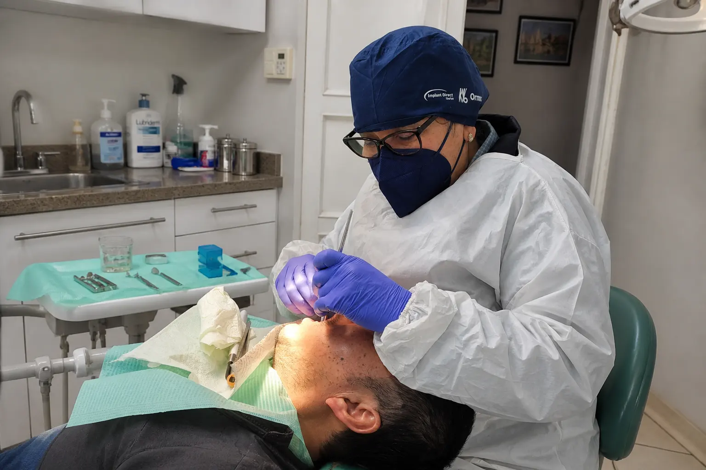
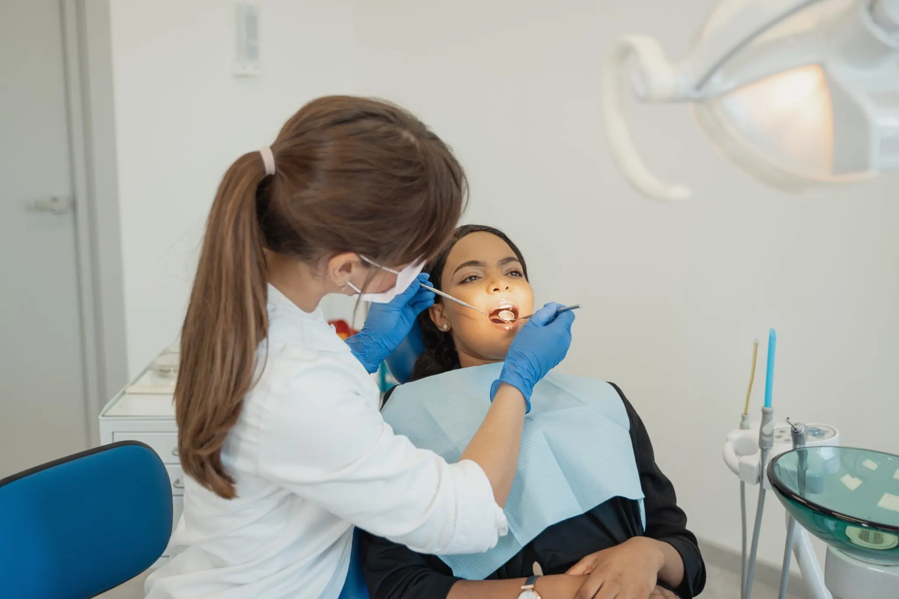

Fundas de porcelana y Zirconio
Soluciones estéticas y funcionales para proteger dientes debilitados, mejorar la mordida y recuperar una sonrisa natural.
Más información →
Clínica Dental Dra. Anna Tavarone. Cuidamos tu salud bucodental con tratamientos personalizados, atención cercana y un equipo profesional acreditado por más de 30 años en Usera.
En Clínica Dental Dra. Anna Tavarone destacamos algunos de nuestros tratamientos más solicitados, aunque contamos con muchos más servicios para cuidar tu salud bucodental.
Soluciones estéticas y funcionales para proteger dientes debilitados, mejorar la mordida y recuperar una sonrisa natural.
Más información →
Diagnóstico y tratamiento de problemas periodontales para cuidar tus encías, prevenir molestias y conservar tus dientes.
Más información →
Recupera piezas dentales perdidas con soluciones seguras, estables y pensadas para mejorar la masticación y la estética.
Más información →
Tratamiento para salvar dientes dañados o infectados, aliviar el dolor y evitar la extracción cuando es posible.
Más información →¿Buscas otro tratamiento dental?
Ver todos los tratamientosEn Clínica Dental Dra. Anna Tavarone cuidamos tu salud bucodental con una atención cercana, tratamientos personalizados y un trato profesional de confianza.
Nuestra experiencia nos permite ofrecer soluciones dentales adaptadas a cada paciente.
Estudiamos cada caso para recomendar el tratamiento dental más adecuado, explicando cada paso con claridad.
Queremos que te sientas cómodo, escuchado y seguro desde la primera visita.
Trabajamos para mejorar tanto la salud de tu boca como la estética de tu sonrisa.

Estudiamos tu caso de forma individual para ofrecerte tratamientos dentales adaptados a tus necesidades, cuidando tu salud bucodental y la estética de tu sonrisa.
Pide cita llamando al 914 76 30 69Nuestro proceso está diseñado para cuidar tu salud bucodental desde el primer momento.
Analizamos tu salud bucodental con detalle para ofrecerte un tratamiento adaptado.
Trabajamos con equipos modernos para tratamientos precisos, cómodos y efectivos.
Contamos con profesionales cualificados en odontología para cuidar tu salud dental.
Te acompañamos en todo el proceso para que te sientas cómodo y con confianza.
Valoración 4.6 en Google Reviews
Anna es una excelente odontóloga, llevo años acudiendo a su consulta siempre que lo necesito. Tanto sus servicios como el trato recibido han sido excelentes. Totalmente recomendable.
Juan S.Hace 1 añoLlevo yendo a esta clínica 20 años. Con eso es suficiente para decir que trabajan muy bien y solucionan tus problemas bucodentales sin dolor.
Esther P.Hace 2 añosExcelente tanto en el trato como en el servicio. Estoy encantada con ellos, son unos magníficos profesionales.
Ivan A.Hace 1 mesArtículos y consejos para cuidar tu salud bucodental.

Los implantes dentales ayudan a recuperar piezas perdidas y mejorar la funcionalidad de la boca.
Leer más →
Una limpieza dental ayuda a prevenir problemas de encías, caries y acumulación de sarro.
Leer más →
El blanqueamiento dental puede mejorar la estética de tu sonrisa de forma segura con supervisión profesional.
Leer más →C. de Nicolás Sánchez, 4, 1º Izquierda, Usera, 28026 Madrid
Estamos aquí para ayudarte. Contacta con Clínica Dental Dra. Anna Tavarone para reservar tu cita.
C. de Nicolás Sánchez, 4, 1º Izquierda, Usera, 28026 Madrid
| Lunes | 11:00–14:00 · 16:30–20:00 |
| Martes | 11:00–14:00 · 16:30–20:00 |
| Miércoles | 11:00–14:00 · 16:30–20:00 |
| Jueves | 11:00–14:00 · 16:30–20:00 |
| Viernes | 11:00–14:00 · 16:30–20:00 |
| Sábado | Cerrado |
| Domingo | Cerrado |
Resolvemos las dudas más habituales antes de pedir cita o iniciar un tratamiento dental.
La clínica está en C. de Nicolás Sánchez, 4, 1º Izquierda, Usera, 28026 Madrid. Atiende a pacientes de Usera y otras zonas cercanas de Madrid.
Puedes llamar al 914 76 30 69, escribir por WhatsApp desde la web o acudir a la clínica para consultar disponibilidad.
Ofrece tratamientos como implantes dentales, endodoncia, fundas de porcelana y zirconio, tratamiento de encías, blanqueamiento dental, limpiezas, empastes, prótesis, cirugía dental y exodoncia.
Sí. Antes de iniciar un tratamiento se realiza una valoración para explicar el diagnóstico, las opciones disponibles y el presupuesto personalizado.
La experiencia ayuda a valorar mejor cada caso, explicar las alternativas y planificar tratamientos adaptados a la salud bucodental y a la estética de cada paciente.